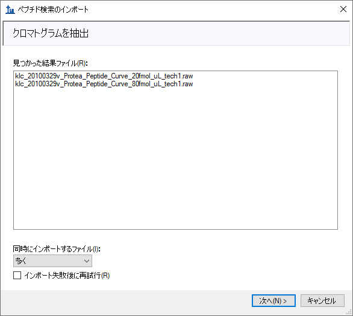
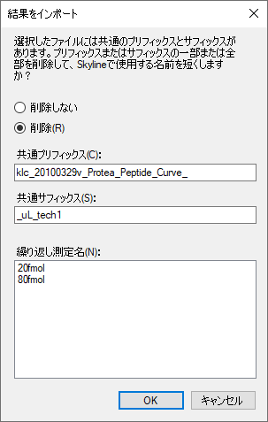
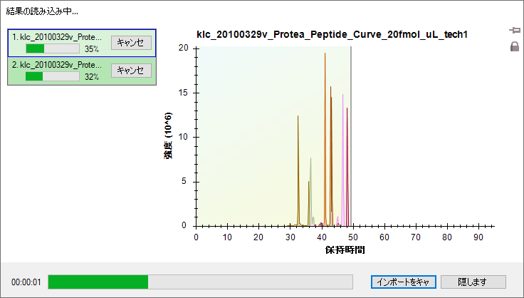
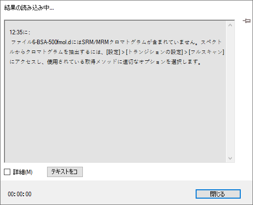
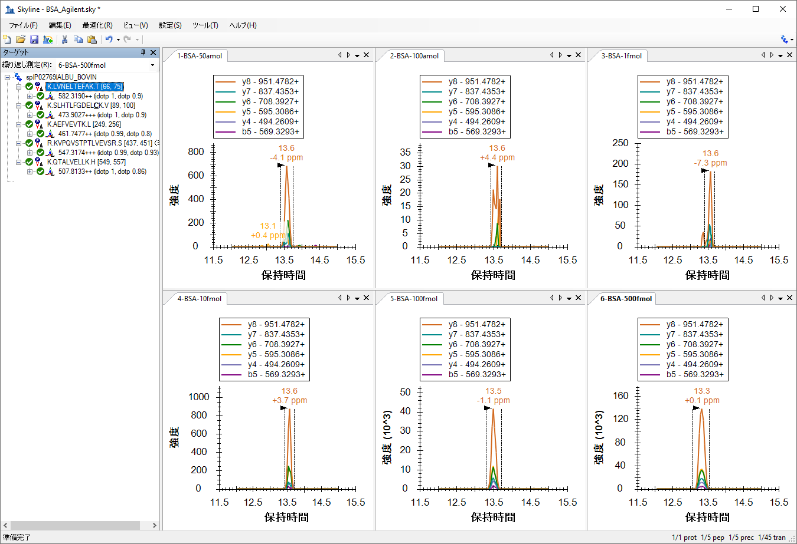

Skyline supports several methods of extracting chromatography-based quantitative measurements from the raw data files of full-scan mass spectrometers, such as ion trap, Orbitrap, and Q-TOF instruments. Skyline supports these methods of analysis for instruments from all 6 major mass spectrometer vendors: Agilent, Bruker, SCIEX, Shimadzu, Thermo-Scientific, and Waters, using an approach flexible enough for both high and low resolution mass analyzers.
In this tutorial, you will learn how to use Skyline to analyze MS/MS spectra acquired with a targeted approach called parallel reaction monitoring (PRM), which has also been called pseudo-SRM and MRM-HR™. As implied by these names, PRM is the full-scan method most similar to the practice of SRM with triple quadrupole mass spectrometers, where Skyline got its start:
As SRM scans through precursor and product ion pairs, collecting single intensity measurements for each in a cycle over time, PRM scans through a data independent list of precursor ions collecting full MS/MS spectra for each in a cycle over time.
Time-intensity chromatograms are extracted by Skyline from the full spectra acquired in this manner.
The resulting chromatograms provide quantitative data similar to the SRM data from triple quadrupole experiments, in the now familiar Skyline user interface.
PRM can be used to provide an alternative for a triple quadrupole when time on such an instrument is not an option. Though, filtering high resolution MS/MS may offer benefits in selectivity over traditional SRM, and the collected scans can be processed in peptide searches to help validate integrated chromatogram peaks. PRM can also be used for system suitability runs on a wide variety of full-scan instruments, even when they are predominantly used for data dependent acquisition (DDA) of MS/MS spectra for peptide spectrum matching pipelines. This ID-free quality control approach will be presented in a separate tutorial, however. This tutorial will explore the use of PRM for targeted quantitative measurement on a low resolution Thermo LTQ and a high resolution Agilent Q-TOF.
To start this tutorial, download the following ZIP file:
https://skyline.gs.washington.edu/tutorials/TargetedMSMS_2.zip
Extract the files in it to a folder on your computer, like:
C:\Users\brendanx\Documents
This will create a new folder:
C:\Users\brendanx\Documents\TargetedMSMS
It will contain all the files necessary for this tutorial. Now, in the Windows Explorer, navigate to the new ‘TargetedMSMS’ folder, and into the ‘Low Res’ subfolder it contains. To open the Skyline project you will use for analyzing the PRM data from a low resolution Thermo LTQ, double-click on the file ‘BSA_Protea_label_free_meth3.sky’.
Select the first peptide in the document, and Skyline should look something like this:

This is a relatively small document. The indicators in the lower right corner, on the status bar, tell you that it contains 10 peptide precursors, with a total of 78 product ions or transitions targeted. Several of the precursors have associated MS/MS library spectra from the public NIST library for bovine serum albumin (BSA). There are also two other peptides, one human and one bovine, measured in both unmodified and phosphorylated forms, for which MS/MS library spectra are not present.
If you are not familiar with how to create a document like this in Skyline, several of the introductory tutorials and instructional videos cover a range of Skyline method editing features. This tutorial will begin from existing documents, assuming you are familiar with Skyline as an editor for targeted proteomics methods.
In the Windows Explorer, you will also see two Thermo raw files in the same ‘Low Res’ folder in which you found this Skyline document. These files contain a series of MS1 and MS/MS spectra acquired on a low resolution LTQ instrument using the PRM approach described above, with a method that looks like:
You can use Skyline to export PRM methods like this for instruments from Thermo-Scientific, Bruker and SCIEX. For Agilent and Waters instruments and the Thermo Q Exactive, Skyline can export an Isolation List, or the PRM equivalent of a SRM transition list. Before exporting a method for a full-scan instrument, you must configure the document for full-scan data analysis.
To configure the current document for analysis of the Thermo raw files provided with this tutorial, perform the following steps:
This document has not yet been set up for chromatogram extraction from full-scan data. It will still work perfectly well for SRM data, but you will need to make some changes to prepare it for importing full-scan data files. The Full-Scan tab will look like this:

To extract chromatograms from full-scan data, Skyline needs a little more information.
The Full-Scan tab should now look like this:

Note that when both MS1 and MS/MS filtering are enabled, all precursor ion chromatograms will be extracted exclusively from MS1 spectra, and all fragment ion chromatograms will be extracted exclusively from MS/MS spectra. If you wanted to see how precursor ions show up in the MS/MS scans, you would have to use a document with MS1 filtering disabled.
Skyline has defaulted the Retention time filtering setting to Use only scans within 5 minutes of MS/MS IDs, but this setting is highlighted in red. If you hover the mouse cursor over the red text, you will see the tip “None of the spectral libraries in this document contain any retention times for any of the peptides in this document.” This is warning you that unless you change something in your spectral libraries, despite this setting intended to narrow the length of time over which chromatograms are extracted, Skyline will have to resort to extracting chromatograms from all matching MS/MS spectra, because it lacks any MS/MS IDs with associated retention times. You will, however, be importing peptide search data derived from searching the targeted MS/MS spectra for this experiment. Do the following now to narrow the range of chromatogram extraction even a little more:
This can greatly reduce the size of your Skyline files, speed up import times and improve chromatogram peak picking.
To ensure that the MS/MS library spectrum matching corresponds correctly to the chromatograms Skyline will extract, you need to make sure the MS/MS resolution in the full-scan settings matches the library ion match tolerance. For this data set, perform the following steps:
The Library tab should look like this:

The library ion match window is now the same as the chromatogram extraction window. This can be a little more complicated with high resolution data, because the chromatogram extraction window will vary with m/z. In the future, we hope to add a check box to force the two settings to match, but for now values between 0.05 and 0.01 usually work best for high resolution data, depending on the resolving power setting for your MS/MS mass analyzer.
Because the MS1 full-scan settings indicate that the single monoisotopic precursor peak should be extracted from the MS1 scans in the results files, you will want to make sure the document contains transition items for the precursor ions. Skyline should have already added ‘p’ (which stands for precursor) to the Ion types field in the Filter tab, but check just to make sure:
The Filter tab should now look like this:

To make sure each peptide precursor item contains a precursor transition, do the following:
Unfortunately, all of the precursors have been manually edited in this document, which keeps Skyline from changing the transitions in response to changes in the Filter tab. You will have to add the precursor transitions manually, as follows:
The form should now look like this:

Repeat this procedure for each of the 9 other precursors in the document. Re-select the first peptide when these changes have been completed.
The document is now configured to work with PRM data. You could also now use it to export a PRM method for an LTQ instrument.
You are best off exporting any method from a Skyline document using the instrument control computer on which you intend to run the method. This is because most of the instrument vendors have not designed their method editing software to perform well in other settings, and Skyline must use libraries from these vendors to make the necessary changes to a template method you provide. In some cases, you can set up vendor software on a personal computer to mimic the environment on the instrument control PC, but this is not recommended. You will be much better off editing your Skyline document on your personal computer, and then transferring it to an instrument control computer for the final method export.
To export a Thermo LTQ method for the current document, therefore, you would first transfer the document to the instrument control computer for a Thermo LTQ, and then perform the following steps:
The Export Method form should now look like:

If you actually performed these steps on a Thermo LTQ, this operation should succeed, and create the new ‘TargetedMSMS_BSA_Protea.meth’ file you specified. If you double-click on the file, then the LTQ Instrument Setup software should show you something like this:

Otherwise, Skyline will show you the following error message:

Simply click the OK button to continue the rest of the tutorial, but remember that similar steps will work for Thermo Ion Trap and Fusion, Bruker QTOF and SCIEX QTOF instrument control computers. Or you can use File > Export > Isolation List for Agilent QTOF, Thermo Q Exactive, and Waters QTOF instruments.
In a small document like this, however, you should be able to create a method like the one above by hand, since it only requires setting up a MS1 scan and 10 MS/MS scans for the specific precursor m/z values in this document. To generate a report containing the precursor m/z values for this purpose, perform the following steps:
The Edit Report form should now look like this:

The Preview Report form should now look like this:

With the precursor m/z values presented in this form, it should not take long to set up a PRM method for this document, even on an instrument that currently lacks direct method export support. In fact, the original method for the data you are about to inspect was created in this way. Note, however, that more and more PRM experiments are becoming as reliant on scheduled acquisition as SRM, for which the scheduling algorithms in Skyline quickly become invaluable.
To import both the peptide search results and the two raw data files collected on a Thermo LTQ for this document, perform the following steps:
Skyline presents a wizard form that looks like this:

The first page of this form can be used to build a spectral library for your Skyline document. To do this now, perform the following steps:
The form should now look like this:
Skyline begins building a spectral library from the results of a Sequest/Percolator peptide search performed on the PRM data for this experiment, presenting you with a progress form as it does this. When Skyline has completed this step, it searches for any raw data files around the peptide search spectrum source files or the Skyline document, and in this case, it finds two matching Thermo raw files. If it could not find matching data files, you would be asked to locate them.
The wizard form should now look like the following, showing you the files Skyline will use for chromatogram extraction:

Skyline detects that these long file names have a common prefix and suffix and offers to remove them for you, showing a form like this:

Because Skyline will show these replicate names in graph labels and other UI elements, it is often a good idea to accept these shortened names, as you will do here.
Skyline shows several of the transition settings you have already adjusted. These settings can be useful when you are starting from scratch, as in the MS1 Full-Scan Filtering tutorial, but you don’t need to change anything further here.
Skyline now shows the full-scan settings, which again you already adjusted for this dataset.
The file import should begin, with progress displayed in the status bar at the bottom Skyline window, and the Loading chromatograms form.

While the targeted chromatograms are being extracted and analyzed for peaks, you can do the following to prepare for viewing the extracted chromatograms:
When the import has completed, the Skyline window should look something like this:

It may be a little difficult to see the chromatograms in this view because of the large number of spectrum IDs, which are annotated with dark blue vertical lines, the letters ‘ID’ and the time in minutes of the identified spectrum. The chosen chromatogram peak appears in the middle of these IDs with a black arrowhead pointing to its apex.
You may note that the chromatogram peak intensities (1.4 x 107) look a lot more similar than you might expect from a 4:1 dilution. This is because the BSA protein digest was used as a constant background in the dilution of the other two proteins in the document.
If you do see this full-chromatogram view in Skyline, do the following to zoom into the integrated peaks in the chromatograms:
This should cause the chromatogram graphs to look like this:
Now you can see the individual lines for spectra that were identified as the target peptide, and if you look closely, you can see one red line in the middle of the chromatogram peak for the 20fmol sample. This is the spectrum that is currently showing in the Library Match view and the one the BiblioSpec library building tool chose as the “best spectrum”. You can look at other spectra in the Library Match view by clicking on the lines in the chromatogram plots, or by clicking in the dropdown list at the top of the Library Match view and choosing from the long list of spectrum times. It may be a little surprising how far from the obvious chromatogram peak a peptide search engine is able to identify a spectrum as containing this abundant peptide. If you look at the spectra beyond the peak integration boundaries, you will see that they have very low signal-to-noise.
And yet, the search was performed with unspecified cleavage on a FASTA file containing the three expected proteins followed by the entire Uniprot FASTA reversed.
And, since, so many peptide ID annotations can be a bit much when inspecting the chromatogram graphs:
Turning your attention to the Targets view, you can see that all of the target peptides now have matching MS/MS spectra and show an icon with a small spectrum in the lower right corner. You can see 0.84 is the lowest dot-product score (labeled ‘dotp’) which provides a correlation score between the measured product ion peak areas and the fragment ion intensities in the library spectra, for the precursor ‘417.8946+++ (dotp 0.84)’. The Targets view shows only the dot-product scores for the active replicate, which is ‘20fmol’. You can tell the active replicate because its tab text is bold, and it is selected in the drop list at the top of the Targets view. You can see the dot-product scores for the ‘80fmol’ replicate by either clicking on its chromatogram graph, or by selecting it in the drop list.
To review this information for all replicates at the same time do the following:
The Peak Areas graph should now look like this:

But, if it does not, you may still need to perform some of the following steps:
You can review all of the target peptides with these settings to see that they all match the search spectra very well, and that the concentrations of the BSA peptides remain relatively constant in these samples. Some of the BSA peptides show higher peak areas for the 20 fmol sample and some for the 80 fmol sample, though this is simply due to measurement variance. For the full 5-point dilution curve, the peak area graph for the LVNELTEFAK peptide shown above looks like:

Next, turn your attention to the human peptide DRVYIHPF, where you should expect to see the 4:1 concentration ratio implied by the sample names 80 fmol and 20 fmol. To get a better look at the measurements Skyline has actually made, do the following:
The Peak Areas graph should now look something like:

The 80 fmol product ions sum to about 3 x 106 and the 20 fmol product ions sum to about 0.7 x 106, which is not far from the expected 4:1 ratio, but for the precursor ions extracted from MS1 scans, the 80 fmol area is about 8 x 106 and the 20 fmol area is about 0.9 x 106, or a 9:1 ratio. Turn your attention to the chromatogram graphs to understand the source of the discrepancy.

You can see that the product ion chromatograms experience much less noise than the chromatograms extracted from MS1. With the background subtraction applied by Skyline, the precursor area for 20 fmol above the background is quite low. Product ion chromatograms from MS/MS are more selective than precursor chromatograms from MS1 at the same resolution, and the product ion chromatograms show much less background.
If you review all of the last 4 peptides in the document now, you can also see that all 4 peptide forms now show about a 4:1 ratio in intensity between the 80 fmol and 20 fmol samples respectively, as expected. (The data are two points taken from a dilution series. Due to size considerations for this tutorial, only 2 points were included.)
These data and other experiments have shown that a low resolution LTQ is an acceptable instrument for performing quantitative experiments using fragment ion chromatograms extracted from MS/MS spectra.1
You can also do the following to compare the relative ion abundances across replicates:
In this mode, you can again review all of the peptides in the document to see that the relative abundances of the fragment ions are very similar between replicates, and very similar to the library spectrum fragment intensities.
|
R.IKNLQSLDPSH.- [80, 90] |
K.HLVDEPQNLIK.Q [401, 411]
|
The other data set included with this tutorial is a complete dilution series performed on a BSA digest, and measured by an Agilent 6500 Series Q-TOF. In order to keep this data small enough to be downloaded with this tutorial, all of the spectrum peaks in the high-resolution spectra have been centroided, though Skyline full-scan filtering works with profile spectra. Because we have found that Skyline does quite well with vendor centroided spectra, there is now an option to force the use of centroided spectra even when profile spectra are available.
To begin working with this Q-TOF data, save the file you have been working on, and open the ‘BSA_Agilent.sky’ file in the ‘TOF’ subfolder of the tutorial folder you created.
Again, this is a complete Skyline document for the experiment measured by the raw data files in the ‘TOF’ folder, but its settings currently only allow SRM data to be imported. If you try at this point to import any of the TOF mass spectrometer data files included with this tutorial, you will get the following error message:

If you actually tried this, get the document back to its original state by doing the following:
You can adjust the document settings to make them compatible with the PRM experiment captured in the tutorial data files by doing the following:
The Full-Scan tab should now look like this:

For this data set, there are no peptide search results from which to get MS/MS IDs, which is why this option appears in red. Nor do you have any way of predicting the retention time at which the peptides will elute prior to importing any data. If you leave the settings as they are, Skyline will extract from all matching scans, because of the lack of MS/MS IDs. You can also choose this explicitly by doing the following:
Skyline also shows this option in red, and if you hover the mouse cursor over the red text, you will see the tip ‘Full gradient chromatograms will take longer to import, consume more disk space, and may make peak picking less effective.’ In this case, however, the data were acquired with a scheduled PRM method, and Skyline will automatically adjust the length of the chromatograms to only the time range where MS/MS spectra were acquired, despite the fact that MS1 spectra were acquired over the full gradient.
To make sure each peptide precursor item now contains precursor transitions, do the following:
In this case, you will see that all peptides now contain 3 precursor transitions (M, M+1 and M+2), which is only possible with high-resolution MS1 scans. The transitions in the Targets view should look something like this:

The precursor transitions were added automatically, because none of the peptides have been edited manually, leaving them in auto-select mode. Again, Skyline automatically added the ‘p’ ion type in the Filter tab because you chose MS1 filtering.
You can also see that Skyline is using orthogonal rankings to rank the precursor isotope peaks (irank) and the product ion peaks (rank). The precursor isotope peaks are ranked according to the expected isotope distribution. While the product ion peaks are ranked separately by their relative intensities in the matching library spectrum.
To import the run with the highest concentration for the dilution series into the document, perform the following steps:
While the targeted chromatograms are being extracted and analyzed for peaks, you can do the following to prepare for viewing the extracted chromatograms:
When the import has completed, the Skyline window should look something like this:

First, you should notice that the chromatograms in the chromatogram graph cover only a range of 3 minutes, in the image above 12 to 15 minutes.
Zooming in on the Targets view, you can see that now two orthogonal dot product values, idotp and dotp, have been added for the precursor isotope distributions and the product ion intensities respectively. For this highest concentration, 500 fmol, these values show very good correlation between the chromatogram peaks and the expected relative intensities.
To zoom into the chosen peaks on all graphs, do the following:
This should make the chromatograms look like:
One thing you might notice from the six chromatogram graphs is that the 50 amol sample has a more intense (700) and better formed peak group than the 100 amol sample (40). All of the peaks have very similar retention times, making it unlikely that this is due to Skyline picking the wrong peak in the 100 amol sample. Also, notice that for high resolution data, Skyline shows a mass error value below the peak retention time annotation, indicating the difference between the expected m/z value and a weighted average of the points in the peak. The figure above shows quite nicely the general trend that higher intensity data tends to be more accurate than lower intensity data, likely due to the changing proportion of intensity caused by noise.
You can get a little more insight into intensity issue with the 50 amol sample by doing the following:
This should make the Peak Areas graph look like:

In this view, the 50 amol sample appears to match more closely to 10 fmol sample than the 100 amol sample. If you review the 4 other peptides, you will find that in two (SLHTLFGDELCK and KVPQVSTPTLVEVSR) the total peak are for the 50 amol sample is actually more intense than the 10 fmol sample, though in the other two the peaks are smaller. Clearly the concentration in this sample is not actually 50 amol. The two peptides with response between 10 fmol and 100 fmol give the impression that the concentration was actually something between these concentrations, but the other 3 peptides weaken that case.
One more thing worth checking is whether the samples were actually measured in the order indicated by the numeric prefix (1, 2, 3 … 6). To achieve this, do the following:
You will see that the graph does not change, which means that the samples were indeed acquired in the order indicated. Response curves like this are usually acquired from lowest concentration to highest concentration to reduce the impact of carryover.
With Skyline you have been able to gain some insight very quickly into the quality of the concentration curve data.
As one last verification step, you may want to have a look at the MS1 filtered precursor peaks to see if they tell a similar story. To view the MS1 peaks, do the following:
The chromatogram graphs should now look something like this:
K.LVNELTEFAK.T (500 fmol)
|
As before, you can see that the most intense product ion (y8) attains about 1/5 the intensity of the monoisotopic precursor (1.4 x 105 v. 7.2 x 105), while even the M+2 peak is still more intense than the y8 peak.
To view the precursor peaks alone, do the following:
This should leave Skyline looking like:

The Peak Areas graph should look like:

If you review each of the 5 peptides again, you will see that the relative intensities of the concentration points are very similar to what you saw with the product ion comparisons.
In this tutorial, you have learned how to set up a Skyline document for performing PRM experiments. This will allow you to perform SRM-like experiments on full-scan instruments, like ion trap and Q-TOF (and Q-Orbitrap) instruments. You can also use this technique for regular system suitability, quality control or diagnostic tests on your full-scan instruments. You have learned how to export PRM methods, currently working for Thermo, SCIEX, and Bruker, and how to use Skyline reports to get a list of target precursor m/z values for instruments that do not currently support method export. (Note: Skyline can now export PRM isolation lists for Agilent, SCIEX, Thermo, and Waters instruments.) You have learned how to import native results files, and even how to extract chromatograms from the MS1 scans which may be included in these files. Once imported, there are a few new annotations, like irank and idotp for included MS1 scans, and you may want to choose to view only information from either MS1 or MS/MS scans. Otherwise, the chromatogram, summary graphs, and reports, that Skyline supplies to help you understand your data, should be familiar from triple quadrupole SRM experiments or tutorials.
1. Stacy D. Sherrod et al. Label-Free Quantitation of Protein Modifications by Pseudo-Selected Reaction Monitoring with Internal Reference Peptides. J. Proteome Res. (submitted)
2. Schilling, B. et al. Platform Independent and Label-Free Quantitation of Proteomic Data Using MS1 Extracted Ion Chromatograms in Skyline. Application to Protein Acetylation and Phosphorylation. Mol Cell Proteomics (2012).doi:10.1074/mcp.M112.017707